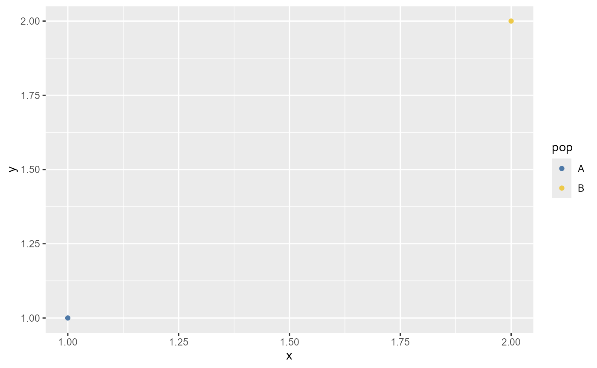

Discrete ggpop population palettes
pop_palettes.RdUnified discrete-only palette API for population-genomics categorical variables. Palettes follow tidyplots-style behavior: extra colours can be downsampled, and short palettes are interpolated when more categories are requested.
Usage
new_pop_palette(x, name = "ggpop palette", reverse = FALSE)
ggpop_palette(n = NULL, palette = c("population", "admixture", "manhattan", "publication"),
downsample = c("evenly", "first", "last", "middle"), reverse = FALSE,
saturation = 1)
scale_colour_ggpop(palette = c("population", "admixture", "manhattan", "publication"),
n = NULL, saturation = 1, reverse = FALSE,
downsample = c("evenly", "first", "last", "middle"), ...)
scale_color_ggpop(palette = c("population", "admixture", "manhattan", "publication"),
n = NULL, saturation = 1, reverse = FALSE,
downsample = c("evenly", "first", "last", "middle"), ...)
scale_fill_ggpop(palette = c("admixture", "population", "publication", "manhattan"),
n = NULL, saturation = 1, reverse = FALSE,
downsample = c("evenly", "first", "last", "middle"), ...)Examples
ggpop_palette(4, "population")
#> [1] "#4E79A7" "#59A14F" "#76B7B2" "#EDC948"
ggplot2::ggplot(data.frame(pop = c("A", "B"), x = 1:2, y = 1:2),
ggplot2::aes(x, y, colour = pop)) +
ggplot2::geom_point() +
scale_colour_ggpop("population")
